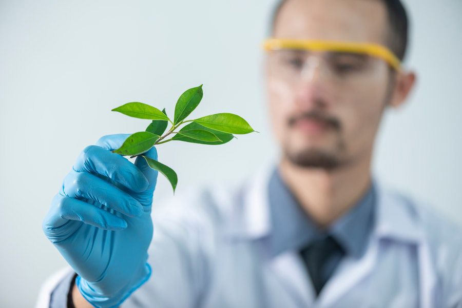

[EL] Αναλυση: Υποβαθμισμενο το περιβαλλον και επιβαρυμενη η υγεια
– December 08, 2019
[EL]
Ανέκαθεν η υγεία, το υπέρτατο αυτό αγαθό ιεραρχείται συνήθως πάνω από την οικονομική ευημερία του καθενός, γιατί συμβάλλει τα μέγιστα σε μια καλή ποιότητα ζωής. Η καθημερινότητά μας οικοδομείται πολλές φορές στη βάση ενός συστήματος ανέσεων και ευκολιών που εμπερικλείει ο σύγχρονος τρόπος ζωής προς χάριν εξασφάλισης περισσότερου (ελεύθερου) χρόνου, αλλά χωρίς ουσιαστικά να επιτυγχάνεται, γιατί ο χρόνος τη σήμερον ημέρα τείνει να εξελιχθεί σε είδος πολυτελείας.
Το σύστημα αυτών των ανέσεων και ευκολιών δημιουργείται από τη χρήση υπηρεσιών, προϊόντων και άσκησης ατομικών συμπεριφορών στο περιβάλλον μας που σιωπηλά και αθόρυβα εσωκλείουν μια πλειάδα περιβαλλοντικών παραγόντων δυνητικά επικίνδυνων για την υγεία. Ολοένα και περισσότερα επιστημονικά στοιχεία συσσωρεύονται καταδεικνύοντας τον αέρα/νερό/διατροφή, χημικά σε προϊόντα και υλικά, τις συμπεριφορές/συνήθειες (καθιστική ζωή), τον τρόπο ζωής (κακή διατροφή), κ.ά., δηλαδή το συνολικό περιβάλλον της καθημερινότητάς μας και λιγότερο την κληρονομικότητα, ως τους κύριους προσδιοριστές της υγείας του ανθρώπου. Αποτελεί πλέον σύνηθες τόπο το συνεχές και σταδιακά υποβαθμιζόμενο περιβάλλον στο οποίο ζούμε. Η υποβάθμιση αποκτά πλέον ρυθμούς πολύ μεγαλύτερους σε σχέση με την εποχή των παππούδων μας.
Επομένως εδώ τίθεται το ερώτημα. Τι μπορούμε να κάνουμε; Πώς μπορούμε να αλλάξουμε νοοτροπία όταν η κοινωνία μας μεγάλωσε με συγκεκριμένο τρόπο, συγκεκριμένες δομές και δεδομένα στις προηγούμενες 4-5 δεκαετίες. Πώς μπορεί να γίνει βιώσιμη η κοινωνία μας και αποτελεσματική στη μείωση ρίσκου υγείας, όταν από τη μια πλευρά η συσσωρευμένη γνώση για θέματα δημόσιας υγείας βρίσκεται σε υψηλό επίπεδο, αλλά από την άλλη, δεν έχουμε πείσει τους πολίτες ακόμη και για τους πλέον ενοχοποιητικούς περιβαλλοντικούς παράγοντες κινδύνου υγείας, π.χ., το κάπνισμα.
Ανατρέχοντας μερικές δεκαετίες πίσω, υπήρχαν και τότε περιβαλλοντικοί κίνδυνοι. Ενδεικτικά αναφέρουμε τα χημικά σε χρήση στη γεωργία (φυτοφάρμακα και λιπάσματα), οι πλαστικές συσκευασίες και προϊόντα στο σπίτι, η ατμοσφαιρική ρύπανση από βιομηχανίες και μεταφορές (αυτοκίνητα), κ.ά. Συγκριτικά, όμως, με το χθες, μπορούμε να ισχυριστούμε ότι στη σύγχρονη κοινωνία μας ο αριθμός τέτοιων δυνητικών περιβαλλοντικών κινδύνων για τον πληθυσμό είναι πλέον μεγαλύτερος σε μέγεθος, συχνότητα και διάρκεια, με μεγαλύτερη συσσωρευτική δυνατότητα στο περιβάλλον και στον άνθρωπο. Τα πιο πάνω σε συνάρτηση με την κλιματική κρίση, τη ραγδαία αύξηση του πληθυσμού και ειδικότερα την αύξηση της πληθυσμιακής πυκνότητας στις πόλεις, έφερε βιομηχανίες και άλλες ρυπογόνες δραστηριότητες πιο κοντά σε κατοικημένες περιοχές αυξάνοντας τις πιθανότητες να μεγαλώσει η ένταση και συχνότητα έκθεσης του κόσμου σε περιβαλλοντικούς ρύπους είτε φυσικούς είτε χημικούς. Συναθροιστικά, συνήθειες και ατομικές συμπεριφορές, όπως καθιστική ζωή, αύξηση κατανάλωσης κρεατικών και γλυκών με ανάλογη μείωση κατανάλωσης λαχανικών και φρούτων που εμφανίστηκαν σιγά σιγά, μεγάλωσαν σε ένταση και συχνότητα και θεμελιώθηκαν πλέον στη σημερινή κοινωνία. Τέτοιες συνήθειες και συμπεριφορές συνοδεύτηκαν με ανάλογη μείωση τιμών και κοινωνικές τάσεις ευκολίας και άνεσης όπου τα ταχυφαγεία, τα γλυκά και το φαγητό ψησταριάς έγιναν εύκολα προσβάσιμα, πολύ γευστικά και οικονομικά ελκυστικά για συστηματική κατανάλωση.
Πώς όμως αντιλαμβάνεται και αντιμετωπίζει ο μέσος πολίτης αυτές τις αλλαγές τρόπου ζωής και αλλαγής στο περιβάλλον που ζει;
Τα πιο πάνω αποτελούν ενδεικτικά παραδείγματα των μεγάλων αλλαγών του περιβάλλοντος και της καθημερινότητας που πλέον ζούμε. Η υιοθέτηση τέτοιων συνηθειών και συμπεριφορών προσέφεραν άμεσα κατανοητές στον μέσο πολίτη, ανέσεις, ευκολίες και μεγαλύτερο οικονομικό κέρδος ή μείωση εξόδων. Αυτό που δεν είναι εν πολλοίς άμεσα κατανοητό είναι ότι αυτές οι αλλαγές εμπεριέχουν ή κουβαλούν ένα συνδυασμό περιβαλλοντικών παραγόντων κινδύνου υγείας που υπό προϋποθέσεις μπορεί να οδηγήσουν στην ανάπτυξη χρόνιων ασθενειών. Οι επιστήμονες σε παγκόσμιο επίπεδο κρούουν τον κώδωνα του κινδύνου μέσω αξιόπιστων επιδημιολογικών μελετών που συσχέτισαν σειρά προβλημάτων υγείας και εμφάνισης χρόνιων νοσημάτων (σακχαρώδης διαβήτης, καρκίνος κ.τλ.) με πλειάδα περιβαλλοντικών παραγόντων, ατομικών συμπεριφορών και τρόπου ζωής (παραδείγματα περιβαλλοντικών παραγόντων αναφέρθηκαν πιο πάνω).
Το ιδιόμορφο χαρακτηριστικό της φύσης των χρόνιων ασθενειών είναι ότι απαιτούν αρκετά χρόνια για να εμφανιστούν, μετά μια συστηματική και χρόνια έκθεση σε συγκεκριμένο συνδυασμό περιβαλλοντικών παραγόντων. Επομένως, αυτή η μεγάλη χρονική καθυστέρηση στην εμφάνιση συμπτωμάτων μιας χρόνιας νόσου δεν βοηθά στο να γίνει η διασύνδεση της εμφάνισης μιας ασθένειας με οποιοδήποτε περιβαλλοντικό παράγοντα που έδρασε 5-10 χρόνια πριν τη διάγνωση της ασθένειας. Φυσικά, κάτι τέτοιο δεν είναι εύκολο να γίνει αντιληπτό ούτε από τους γιατρούς, πόσο μάλλον από τον ασθενή. Έτσι, κατά τη διάγνωση μιας χρόνιας νόσου, οι περιβαλλοντικοί παράγοντες που πραγματικά μπορεί να είναι η αιτία της νόσου να παραμένουν κάτω από το ραντάρ των ειδικών αλλά και του κόσμου γενικότερα, αποτελώντας μια ύπουλη και σιωπηλή απειλή της υγείας του ανθρώπου. Οι ειδικοί δημόσιας υγείας που επιμένουν να στοχοποιούν με αδιάσειστα στοιχεία τη σύνδεση περιβάλλοντος και υγείας του ανθρώπου συχνά έρχονται αντιμέτωποι με απόλυτες απόψεις και γνωμικά απαξίωσης και απαισιοδοξίας όπως π.χ. «το περιβάλλον είναι καταστραμμένο», «δεν υπάρχει επιστροφή» και «τα πάντα είναι μολυσμένα ή ότι δεν μπορώ να προστατευτώ».
Αρκετά είναι και τα παραδείγματα της κοινωνίας τα οποία χρησιμοποιούνται για την απενοχοποίηση περιβαλλοντικών παραγόντων κινδύνου υγείας. Αυτό μπορεί να γίνει όταν π.χ., κλασικοί περιβαλλοντικοί παράγοντες (κάπνισμα, αλκοόλ και κακή διατροφή) καρκινογένεσης δεν ήταν μέρος της καθημερινής ζωής μεμονωμένων περιστατικών που ανέπτυξαν καρκίνο. Τέτοια μεμονωμένα περιστατικά δεν αποδεικνύουν κάτι επιστημονικά και δεν απενοχοποιούν περιβαλλοντικούς παράγοντες κινδύνου καρκινογένεσης χωρίς να ξέρουμε όλο το ιστορικό περιβαλλοντικών εκθέσεων του συγκεκριμένου ατόμου και όχι μόνο των 3 παραγόντων που προανέφερα. Για παράδειγμα, κανείς δεν μπορεί να αποκλείσει την πιθανότητα έκθεσης αυτού του ατόμου σε καρκινογόνους παράγοντες στην εργασία του ή στο χώρο διαμονής του.
Αντιμετώπιση κινδύνων υγείας με το εκθεσίωμα
Είναι απαραίτητο να αντιμετωπίσουμε την πλειάδα περιβαλλοντικών κινδύνων που υπάρχει στην καθημερινότητά μας ως μίγμα κινδύνων και όχι ως μεμονωμένες ξεχωριστές περιπτώσεις για την καλύτερη προστασία μας έναντι κινδύνων υγείας. Η κλασική επιδημιολογία δεν μπορεί να αποτιμήσει εύκολα το κοκτέιλ-μίγμα περιβαλλοντικών παραγόντων και την αιτιατή σχέση του μίγματος με τη διαδικασία συγκεκριμένης παθογένεσης. Εδώ εισάγεται η νέα μεθοδολογική προσέγγιση της έννοιας του ανθρώπινου εκθεσιώματος (exposome) που ξεφεύγει από την κοινή πρακτική συνυπολογίζοντας μια πλειάδα πολλαπλών περιβαλλοντικών παραγόντων σε σχέση με τη διαδικασία ανάπτυξης χρόνιας νόσου.
Το εκθεσίωμα (exposome) ορίζεται ως ο ολιστικός χαρακτηρισμός πολλαπλών περιβαλλοντικών παραγόντων καθ’ όλη τη διάρκεια ζωής του ατόμου. Ο ορισμός του εκθεσιώματος είναι κατ’ αναλογία με αυτόν του γονιδιώματος (genome), το οποίο από τη μεριά του επιτρέπει τη χαρτογράφηση του ανθρώπινου DNA (χαρακτηρισμό όλων των γονιδίων). Το εκθεσίωμα προϋποθέτει την αντιμετώπιση όλων των περιβαλλοντικών κινδύνων όχι αποσπασματικά αλλά ολιστικά στον βαθμό που μπορούμε. Για να το καταφέρουμε αυτό, ξεκινούμε κατ’ αρχάς με την κατανόηση και αποδοχή ύπαρξης πολλαπλών περιβαλλοντικών κινδύνων στην καθημερινότητά μας ειδικά για ευαίσθητες κοινωνικές ομάδες (παιδιά, εγκύους, τρίτη ηλικία κ.ά.). Η διαδικασία συνυπολογισμού πολλαπλών περιβαλλοντικών εκθέσεων είναι περισσότερο πολύπλοκη αλλά πιο ρεαλιστική και με περισσότερες πιθανότητες ανακάλυψης των πραγματικών περιβαλλοντικών παραγόντων ρίσκου υγείας. Επίσης, μπορεί το εκθεσίωμα να βοηθήσει μέσω της αρχής της πρόληψης να μειωθεί σημαντικά το ρίσκο υγείας με υιοθέτηση σειράς απλών μέτρων μείωσης της έκθεσης σε μίγμα περιβαλλοντικών παραγόντων.
Συνακόλουθα, οι τρόποι προστασίας του κόσμου προϋποθέτουν μερικές αλλαγές σε συνήθειες, πρακτικές και συμπεριφορές, σε σταδιακή βάση. Η αλλαγή νοοτροπίας που απαιτείται αρχικά πρέπει να συνοδευτεί με εύκολες και απλές αλλαγές τρόπου ζωής και ατομικών συμπεριφορών και όχι με την απότομη αλλαγή 360 μοιρών στην οποία θα είναι δύσκολο να συμμορφωθεί κάποιος για μεγάλο διάστημα. Επίσης, το οικονομικό είναι σημαντική παράμετρος που θα πρέπει να συνεκτιμηθεί, αρχίζοντας από τα εύκολα και πιο οικονομικά μέτρα πρόληψης και προστασίας για εμάς και την οικογένειά μας. Είναι σημαντικό στην εποχή της υπερπληροφόρησης να διαλέγουμε τις αξιόπιστες πηγές ενημέρωσης και εκπαίδευσης οι οποίες θα πρέπει κατά κόρον να προέρχονται από πανεπιστημιακές οντότητες, είτε ηλεκτρονικές (ιστοσελίδες, άρθρα, κοινωνικά μέσα δικτύωσης) είτε συμβατικές (βιβλία, άρθρα), οι οποίες να είναι εξειδικευμένες στο σχετικό θέμα.
Εδώ είναι που δίνουμε έναν τόνο αισιοδοξίας και αυτό το οφείλουμε, αν όχι στον εαυτό μας, πρωτίστως στα παιδιά μας και τις επόμενες γενιές. Η σύγχρονη καθημερινότητα είναι πιο δύσκολη και πολύπλοκη σε σχέση με την καθημερινότητα που επικρατούσε 4-5 δεκαετίες πριν. Η δυσκολία της καθημερινότητας έγκειται και στο ότι ελλοχεύουν πολλαπλοί περιβαλλοντικοί κίνδυνοι για την υγεία μας και για την υγεία των παιδιών και συγγενικών μας προσώπων.
Το μήνυμα που στέλνουμε μέσω αυτού του άρθρου είναι ότι: Ναι, μπορούμε να προστατευτούμε εμείς και τα παιδιά μας ακολουθώντας μέτρα πρόληψης για να έχουμε αρκετά μειωμένες πιθανότητες να νοσήσουμε με κάποια χρόνια ασθένεια, εξασφαλίζοντας έτσι μια καλή συνολικά ποιότητα ζωής.
Έντονη κινητοποίηση
Η δικαιολογία «δεν γνωρίζω /δεν ήξερα» για θέματα διασύνδεσης ενός υποβαθμισμένου περιβάλλοντος με την υγεία ίσχυε για την εποχή των παππούδων μας, μιας και η γνώση στον τομέα της υγείας ήταν σε εμβρυϊκή κατάσταση, ενώ πλέον έχει κάνει άλματα τα τελευταία χρόνια. Έτσι, με την πάροδο δεκαετιών ανακαλύψαμε ότι πρώην θεωρητικά ασφαλείς για την υγεία συμπεριφορές, π.χ. το κάπνισμα, δεν ήταν έτσι στην πραγματικότητα, ή αντίστροφα, η καφεΐνη που θεωρείτο καρκινογόνος παράγοντας τελικά δεν ήταν λόγω της μη συμπερίληψης ενός συγχυτικού παράγοντα (κάπνισμα) στην αρχική ανάλυση που ενοχοποίησε λανθασμένα την κατανάλωση καφέ με καρκινογένεση.
Εκτός από τους κάθετα αρνητικούς στο να πιστέψουν τη σύνδεση του περιβάλλοντός τους με την υγεία τους, υπάρχει και η μερίδα του κόσμου η οποία αντιλαμβάνεται αρκετές φορές αποσπασματικά τη σύνδεση περιβάλλοντος-υγείας.
Παραδείγματος χάριν, διαπιστώνεται έντονη κινητοποίηση για συγκεκριμένους περιβαλλοντικούς κινδύνους όπως ήταν πιο παλιά τα μεταλλαγμένα, η γειτνίαση σε ρυπογόνα εργοστάσια (βλέπε Άστρασολ και το χυτήριο στους Εργάτες, το εργοστάσιο μπαταριών στη Λευκωσία και άλλα) και βιομηχανικές ζώνες (π.χ. οσμές και οχληρία στο Δάλι, Σταυροβούνι), και προσφάτως η προοπτική του 5G. Τι κοινό έχουν τα πιο πάνω παραδείγματα; Το ότι όλες οι πιο πάνω ενδεικτικές περιπτώσεις ασχολούνται με έναν συγκεκριμένο περιβαλλοντικό ρύπο είτε φυσικής (π.χ. 5G) είτε χημικής προέλευσης (π.χ., μόλυβδος, διχλωρομεθάνιο). Στην πραγματικότητα, αυτή η απλοποίηση δεν υφίσταται γιατί η καθημερινότητά μας εμπερικλείει μια πλειάδα περιβαλλοντικών κινδύνων και όχι έναν συγκεκριμένο κίνδυνο. Έτσι, κάποιοι πολίτες μπορεί να ενδιαφέρονται ειδικά και μόνο για τις επιπτώσεις του 5G στην υγεία τους, ενώ να είναι ταυτόχρονα και μανιώδεις καπνιστές ή να ακολουθούν ένα μη υγιεινό διατροφικό πρόγραμμα.